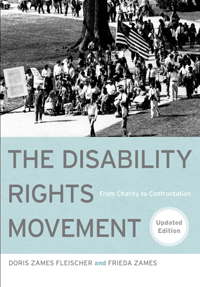

A newly updated account of the struggle for disability rights in the U.S.
A newly updated account of the struggle for disability rights in the U.S.


 A newly updated account of the struggle for disability rights in the U.S.
A newly updated account of the struggle for disability rights in the U.S.

|  |
The Disability Rights MovementFrom Charity to ConfrontationUpdated EditionDoris Zames Fleischer and Frieda Zamespaper EAN: 978-1-43990-744-3 (ISBN: 1-4399-0744-7) |
In this updated edition, Doris Zames Fleischer and Frieda Zames expand their encyclopedic history of the struggle for disability rights in the United States, bringing us up to date with the past ten years of disability rights activism. The Disability Rights Movement includes a new chapter on the evolving impact of the Americans with Disabilities Act, the continuing struggle for cross-disability civil and human rights, and the changing perceptions of disability. The authors provide a probing analysis of such topics as deinstitutionalization, housing, health care, assisted suicide, employment, education, new technologies, disabled veterans, and disability culture. Based on interviews with over one hundred activists, The Disability Rights Movement tells a complex and compelling story of an ongoing movement that seeks to create an equitable and diverse society, inclusive of people with disabilities.
Excerpt available at www.temple.edu/tempress
"It is accordingly useful and timely to look at the revised version of this important book and take stock of the current political conjuncture. At the heart of this deeply rewarding book is the very simple yet transformative idea that it is structural barriers in society, both physical and attitudinal, that impair the lives of people with disabilities.... The writing is throughout sharp and clear. While not written from a radical perspective, the book is particularly strong in discussing the healthcare issues and barriers facing people with disabilities.... [An] excellent text that serves as a valuable introduction to the issues facing Americans with disabilities."
—Socialism and Democracy
"[A] thorough history of the disability rights movement with a clear emphasis on discrimination against disabled individuals and their many struggles to gain access to different institutions as well as to gain rights concerning health and visibility..... The Disability Rights Movement is a truly great book that is useful for a wide range of readers; those working within disability communities and organizations, in the classroom, and for the layperson interested in the history of activism and disabilities."
—Metapsychology
Personal Notes
Preface to the Updated Edition
Preface to the First Edition
Acknowledgments
Chronology
Abbreviations and Acronyms
1. "Wheelchair Bound" and "The Poster Child"
FDR, the "Cured Cripple" •
League of the Physically Handicapped •
The March of Dimes •
Parent-Initiated Childhood Disability Organizations •
The Poster Child and the Telethon •
Changing Views of Disability in the United States
2. Seeing by Touch, Hearing by Sign
Blindness and Deafness: A Comparison •
Sign Language and Oralism •
Braille and Talking Books •
Sheltered Workshops •
The Lighthouse •
Mobility for Blind People: Guide Dogs and White Canes •
Jacobus tenBroek and the National Federation of the Blind •
NYC Subway Gates: A Controversy in the Blind Community •
NFB: Trailblazer for Sections 504 and 501 •
NFB and ACB: Different Approaches to Blindness •
Deafness as Culture •
American Sign Language •
The Gallaudet University Uprising •
Black Deaf Advocates •
Education of Deaf Children •
Helen Keller, the Social Reformer
3. Deinstitutionalization and Independent Living
Deinstitutionalization •
Early Accessibility Efforts in the Colleges •
Ed Roberts and the Independent Living Movement •
Proliferation of the Independent Living Concept •
Characteristics of Independent Living Centers •
Independent Living as an Extension of Rehabilitation •
Evaluation of the Independent Living Movement •
Independent Living and the New Disability Activism
4. Groundbreaking Disability Rights Legislation: Section 504
The Cherry Lawsuit for the Section 504 Regulations •
Section 504 as a Spur to Political Organizing •
ACCD, Propelling Section 504 •
The Section 504 Demonstrations •
The Transbus Controversy •
Accessible Transit and New York City •
Bay Area Rapid Transit (BART) •
California Accessible Buses •
Mainstreaming Public Transit •
The Civil Rights Significance of Accessible Transportation
5. The Struggle for Change: In the Streets and in the Courts
Disabled In Action •
New York Lawyers for the Public Interest •
Recognizing Disability as a Civil Rights Issue •
Disability Rights Education and Defense Fund •
The Need for Disability Rights Attorneys •
ADAPT •
Justice For All
6. The Americans with Disabilities Act
Enacting the ADA •
The ADA and Section 504 •
Title I: Employment •
Title III: Public Accommodation •
Title II: Public Services (State and Local Government) •
Title II: Public Transportation •
Title IV: National Telephone Relay Service •
Title V: Miscellaneous •
The Supreme Court and the ADA •
The Myth of "The Disability Lobby" •
Backlash •
Every American�s Insurance Policy Log
7. Access to Jobs and Health Care
Employment Discrimination •
Affirmative Action •
Disability Employment in Corporate America •
Employment of People with Developmental Disabilities •
Employment of People with Psychiatric Disabilities •
The Criminalization of People with Psychiatric Disabilities •
Different Approaches to Psychiatric Disabilities •
Mangled Care •
A Two-Tier Health Care System •
People with Special Needs in Managed Care •
An Arbitrary Patchwork •
Falling through the Cracks: Children with Special Health Needs •
Long-Term Care in the Community •
Health Policy Reforms •
The Nexus between Jobs and Health Care
8. "Not Dead Yet" and Physician-Assisted Suicide
Opposition to "the Death Train" •
The Supreme Court •
AIDS Activists •
Pain Management •
Focus on Cure: A Pernicious Message •
The Eugenics Movement and Euthanasia •
The Politics of Physician-Assisted Suicide •
Netherlands "Slippery Slope" vs. U.S. "Political Strategy" •
First-Year Report on Physician-Assisted Suicide in Oregon •
Legalizing Disability Discrimination •
Dangers of an Inflexible Law •
"A Better Solution" •
The Distinction between Severe Disability and Terminal Illness
9. Disability and Technology
Universal Design •
Accessible Taxis •
Teletypewriters and Relay Systems •
A Clash of Cultures •
The One-Step Campaign •
Wheelchair Ingenuity •
Accessible Classrooms and Laboratories •
The Computer as an Accommodation •
Psychopharmacology •
Bioethical Dilemmas •
The Internet and a Miracle Baby •
Medical and Genetic Information •
"Slash, Burn, and Poison" •
Transforming Scientific Orthodoxy: AIDS Activism •
Toward a New Vision: Three Queries
10. Disabled Veterans Claim Their Rights
Legislation and Self-Advocacy •
Rehabilitation: The Man, Not the Wound •
Paralyzed Veterans of America •
Automobiles: Opening "New Vistas" •
The Pattern of Denial •
Atomic and Chemical Guinea Pigs •
Holding a Nation Accountable
11. Education: Integration in the Least Restrictive Environment
A "Quiet Revolution" •
Enforcing the IDEA: Early Efforts •
Least Restrictive Environment •
An Appropriate Identity •
The IDEA in the Courts •
The Special Education Controversy •
Somnolent Samantha •
A Microcosm of the Real World
12. Identity and Culture
Three Strands of the Movement •
Disability Pride: Celebrating Difference •
Changing Perceptions and the Media •
Assessment of the Movement •
A Stealth Movement
13. Disability Rights in the Twenty-First Century
Olmstead and the Community Choice Act •
�Visitability� •
Psychiatric Survivors and Consumers •
The New Eugenics •
Physician-Assisted Suicide •
Media, Technology, and Disability Culture •
Disabled Veterans •
Activists Assess Progress in Securing Disability Rights •
Disability Rights Attorneys Speak •
Perceptions of Disability
Notes
Index
Doris Zames Fleischer, a full-time member of the Department of Humanities at New Jersey Institute of Technology since 1988, has written and lectured widely on issues related to disability rights.
The late Frieda Zames, Professor Emeritus of Mathematics at New Jersey Institute of Technology, was a much honored pioneer in securing rights for people with disabilities.
Disability Studies
History
Community Organizing and Social Movements
© 2015 Temple University. All Rights Reserved. This page: http://www.temple.edu/tempress/titles/1280A_reg.html.